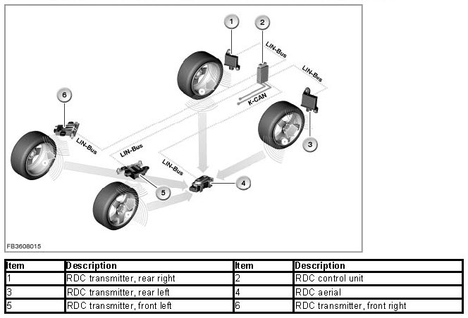
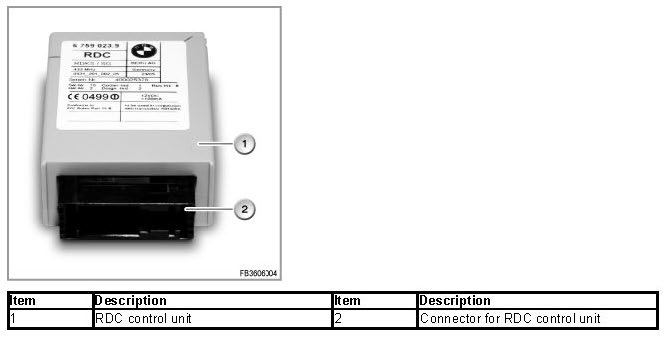
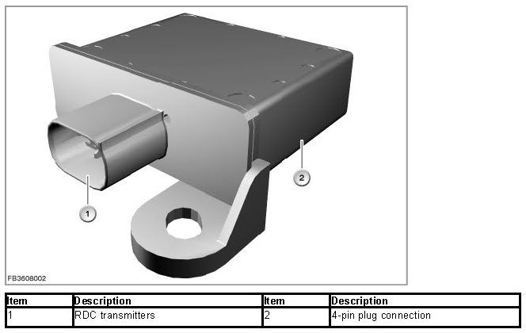
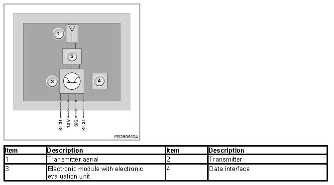
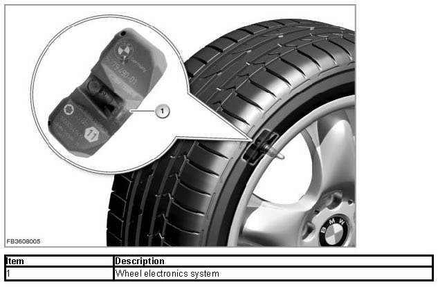
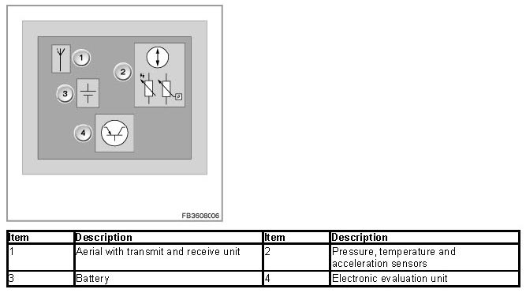
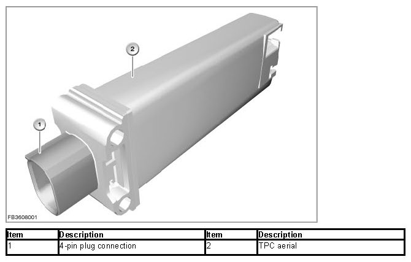
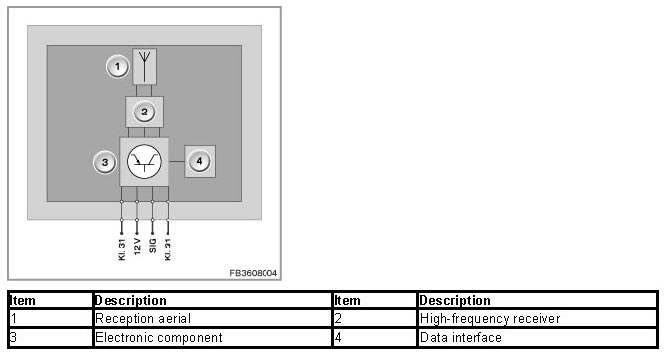

Tire Pressure Monitor (RDC)
Tire Pressure Monitor (RDC)
System function of RDC
The Tire Pressure Monitor (RDC) is a system for monitoring the tire inflation pressure when driving. It is offered exclusively in the USA (legal requirement) and as an optional extra in Canada.
The tire inflation pressure to be monitored is specified by the driver. He or she instructs the system via the control function in iDrive to save the current tire inflation pressure as the target pressure value (Reset). The plausibility of the setpoint pressure is checked before the RDC control unit adopts it (axle-wise comparison of the specified pressures, minimum pressures). A reset is only possible when the tire inflation pressure on all wheels is at least 1.6 bar. If the tire inflation pressure of one wheel falls below this limit, a Check Control message is issued immediately. If the pressure difference between the wheels on one axle greater than 0.4 bar, the reset is rejected following a plausibility check. A Check Control message is output. Remedy: set tire inflation pressures to the correct values and then run the reset once again.
Internal sequence after triggered adaptation process (reset):
1. Recognition of the fitted wheel electronics systems
2. Identifying of the position of the wheel electronics systems
3. Plausibility check by checking the target pressures
4. Adoption of the specified pressures as target pressures
On comparison of the current tire inflation pressure with the target pressure, the air temperature is taken into account. On the basis of the target pressure and temperature during the reset, the RDC calculates the limit values for the tire inflation pressure. The tire inflation pressure increases by 0.1 bar per 10 °C increase in temperature. If the temperature-evaluated values are not reached, the RDC issues a Check Control message.

RDC control unit
At the request of the RDC control unit, the following messages are queried via the RDC transmitters (125 kHz) by each wheel electronics system:
- Tire inflation pressure
- Tire air temperature
- Battery status and identifier (ID) of the wheel electronics system
These messages are then sent across a high-frequency transmission path (433 MHz) to the RDC aerial. The measuring cycle is 54 seconds. The received radio signal are converted into a digital signal in the RDC aerial. This digital signal is forwarded on the bus to the RDC control unit.

RDC transmitters
The RDC transmitter is a component of the Tire Pressure Monitor (RDC). In total, 4 RDC transmitters are installed (front left, front right, rear left and rear right). The 4 RDC transmitters are fitted under the wheel arch trim in the wheelhouses. The 4 RDC transmitters are identical components.
The RDC control unit sends a request to the RDC transmitters as a digital signal. Each RDC transmitter has its own electronics as well as its own data line to the RDC control unit. In each RDC transmitter, the digital signal is converted into a radio signal. Subsequently, the RDC transmitters send the request telemetrically to the wheel electronics systems in the wheels.

Structure and inner circuit
All 4 pins at each plug connection are used. The outside pins are earth connections. The inner pins are supply voltage and signal cable. The two earth connection are connected on a board in the electronic module. Only 3 cables are used in the wiring harness.

Diagnosis instructions for RDC transmitters:
If a RDC transmitter fails, the following behavior is to be expected:
- Fault entry in the RDC control unit
- Check Control message
- The RDC indicator and warning light lights up:
Wheel electronics system
In all wheels, wheel electronics systems are fitted in the wheel drop centre. The wheel electronics systems are bolted onto the filling valves (made of metal). The wheel electronics systems are identical components.
The RDC control unit sends a request to the RDC transmitters across the data line. In each RDC transmitter, the digital signal is converted into a radio signal. Subsequently, the RDC transmitters send the request telemetrically to the wheel electronics systems in the wheels.
For identification by the RDC control unit, each wheel electronics system has its own ID (identifier). This ID is transferred with each data interchange.
The information of the acceleration sensor is evaluated for detection of the road wheel. The acceleration sensor is conceived in such a way that the rotation of the wheel is detected as of a certain tangential speed and the corresponding bit is set in the message of the wheel electronics system. In cases of doubt, the bit is used to distinguish between the road wheel and the spare wheel.

So as not to place an unnecessary load on the state of charge of the battery, the wheel electronics system works in 4 different modes. The mode in which a wheel electronics system runs a measurement or sends a radio signal depends on the tire inflation pressure and tire air temperature.
Structure and inner circuit
The wheel electronics system consists of a plastic housing. The plastic housing contains a circuit board and the following components:
- Pressure sensor
- Temperature sensor
- Acceleration sensor
- Transmitter/receiver unit
- Electronic evaluation unit
- Battery

Diagnosis instructions for the wheel electronics systems:
If the wheel electronics system fails, the following behavior is to be expected:
- Fault entry in the RDC control unit
- Check Control message
- The RDC indicator and warning light lights up:
NOTE: Deactivating an activated wheel electronics system is not possible.
It is not possible to deactivate a wheel electronics system that has already been activated. However, it does not send a radio signal as long as it has not been activated (trigger signal from RDC transmitter) and the vehicle is at a standstill.
The state of charge as well as the residual runtime of the battery in the wheel electronics system can be shown in the BMW diagnosis system. The battery of the wheel electronics system cannot be replaced.
TPC aerial
The RDC aerial is a component of the Tire Pressure Monitor (RDC). The RDC aerial receives the high-frequency radio signals of the 4 wheel electronics systems. The measured values are sent either on request (cyclical, every 54 seconds) or automatically in the event of a breakdown (once per second) by the wheel electronics system. At temperature values greater than 120 °C within the tire, the wheel electronics system is switched off; on cooling down to below 110 °C, it is switched on again.
The received radio signal are converted into a digital signal in the RDC aerial. This digital signal is forwarded on the bus to the RDC control unit.

Structure and inner circuit
All 4 pins at each plug connection are used. The outside pins are earth connections. The inner pins are supply voltage and signal cable. The two earth connection are connected on a board in the electronic module. Only 3 cables are used in the wiring harness.

Diagnosis instruction for RDC aerial
If the RDC aerial fails, the following behavior is to be expected:
- Fault entry in the RDC control unit
- Check Control message
- The RDC indicator and warning light lights up:
Resetting the Tire Pressure Monitor
On vehicles with iDrive, the RDC is reset via the menu item: Settings/Vehicle/RDC/Reset. In general, the reset can be carried out with the ignition on or engine on (only when vehicle is stationary).
Notes for Service department
Diagnosis instructions
IMPORTANT: Conditions for reset.
The RDC must be reset in the following cases:
- The tire inflation pressure is changed.
- A wheel exchange is carried out. The exchanged wheels must be equipped with the correct wheel electronics systems.
- Axle-wise wheel exchange on the vehicle.
- Diagnosis instruction
NOTE: Check of the wheel electronics system
A check as to whether the correct wheel electronics system has been fitted can only by run after the tire has been removed. Unfortunately, a query via the BMW diagnosis system is not possible for technical reasons.
NOTE: Reset of the RDC control unit
During the reset, the control unit functions (measurement data of wheels 1 - 5) contain substitute values until the wheel allocation is complete (e.g. 6.4 bar; 127 °Celsius). To enable successful conclusion of the wheel allocation, the wheels must turn.
National versions
USA, Canada
Transmission frequency of the system: 433 MHz
Received frequency of the system: 125 kHz
No liability can be accepted for printing or other errors. Subject to changes of a technical nature